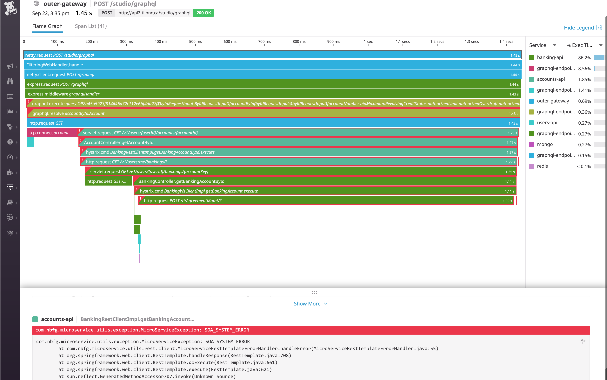

Observability
Gaining insight into your system health
Must read or watch
Adrian Cole
Peter Bourgon
Brendan D. Gregg
Yuri Shkuro
Ben Sigelman
Cindy Sridharan
The Dapper paper from
2010
Observability
In control theory, observability is a measure of how well internal states of a system can be inferred from knowledge of its external outputs.
Monitoring and Observability
Observability is an attribute meaning the system is emitting a signal.
Monitoring is an action taken from a human or a machine based on an event.
-
Logs:
Easy to grep, to read and produces a high volume of data -
Metrics:
Identify trends over time, are visualize through graphs and produce low volumes. -
Distributed traces:
Identify tree of calls across services
 Ref: Peter
Bourgon
Ref: Peter
Bourgon
Telemetry and Observability
It's about recording & transmitting the readings of an instrument.Logs
https://12factor.net/logs
- Logs are the stream of aggregated, time-ordered events collected from the output streams of all running processes.
- Logs in their raw form are typically a text format with one event per line (exceptions may span multiple lines).
- Logs have no fixed beginning or end, but flow continuously as long as the app is operating.
Logs
- Come in three different flavors: Plaintext, Structured (JSON format) or binary
- Trivial to generate
- Provide rich context information
- Expensive to process, move, store and query
- Noisy
- Relates to a single system
An app should not attempt to write to or manage logfiles.
Instead, each running process writes its event stream, unbuffered, to stdout.
https://12factor.net/logs
 Ref: fluentd
Ref: fluentd
Instrumentation
import org.slf4j.Logger;
import org.slf4j.LoggerFactory;
import org.slf4j.LoggerFactory;
public class Wombat {
final Logger logger =
LoggerFactory.getLogger(Wombat.class);
Integer t;
Integer oldT;
public void setTemperature(Integer temperature) {
oldT = t;
t = temperature;
logger.debug("Temperature set to {}", t, oldT);
if(temperature.intValue() > 50) {
logger.info("Temperature has risen above 50 degrees.");
}
}
}
Metrics
Metrics are a numeric representation of data measured over intervals of time. Metrics can harness the power of mathematical modeling and prediction to derive knowledge of the behavior of a system over intervals of time in the present and future.Ref: Cindy Sridharan
Metrics
- Have a linear cost. Spike in traffic doesn't generate more metrics.
- Near realtime availability
- Useful to identify patterns and generate alerts
- Great to generate reports and diagram
- Cost increase with the number of label values
- Almost no context
- Relates to a single system (like logs)
A time series is simply a series of data points ordered in time. In a time series, time is often the independent variable and the goal is usually to make a forecast for the future
Marco Peixeiro
- Counters: Number of HTTP 500
- Gauge: Memory usage
- Histogram: Statistical distribution: 95th percentile of request execution
- Rate: Error/minutes
Distributed Traces
Distributed tracing is a method used to profile and monitor applications,https://opentracing.io
especially those built using a microservices architecture. Distributed tracing helps pinpoint where failures occur and what causes poor performance.
Distributed Traces
- Help visualize and understand complex architectures
- Enables developers to see how an individual request is handled
- Attach a unique trace ID to requests
- Provides insight into the full lifecycles of requests, allowing you to pinpoint failures and performance issues.
OpenTracing Overview
-
Trace:
Collection of Spans reprensented as a DAG -
Span:
Unit of work defined by: operation name, timestamps and more -
SpanContext:
All the info identifying a Span, and that must be propagated, such as: TraceId, SpanId -
Tracer:
The actual implementation that creates, inject and extract SpanContext


Ref: Jaeger
Instrumentation Mechanism
-
Agent:
modification required. Example of agents à la sauce bytebuddy: - opentracing: java-specialagent
- datadog: dd-trace-agent
-
Sidecar:
Require modifications to the application code. Minimally the application should forward SpanContext headers -
Framework:
Embedded in the application code. Almost every plateform provide a library.
Flame Graph
Demo
Portable and Open approach
The most important thing is to make sure that you choose something portable for the actual instrumentation piece of a distributed tracing system. You don’t want to go back and rip out the instrumentation because you want to switch vendors. This is becoming conventional wisdom. Ben SigelmanWhat happen after 100% Observability
Fundamental Principle Beyond Observability: Choose what you measure carefully, Explain what you see, Turn data into action
Google SRE 4 Golden Signals
RED: Request rate (count), Error rate (count), and Duration of requests.
USE: Utilization, Saturation, and Error: http://www.brendangregg.com/usemethod.html